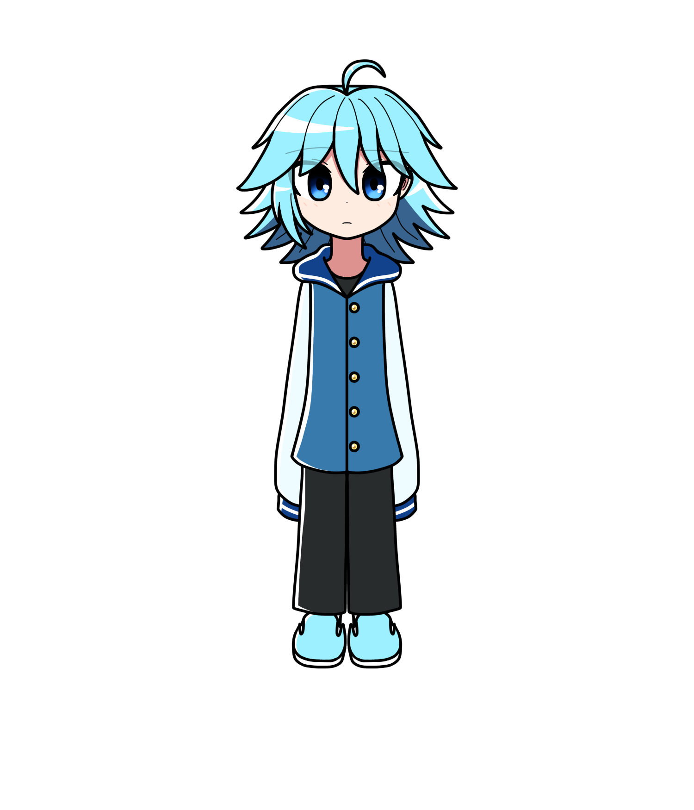

ラウ・ブルーノ
概要
最悪の邪神級の力を持った悪魔、
アディヴズとマリオネットの女性から生まれた子供。
現在はアオイ・ブルーノの養子となる。
プロフィール
| 種族 | 悪魔とマリオネットのハーフ |
|---|---|
| 性別 | 男性 |
| 年齢 | 6歳 |
| 誕生日 | |
| 身長 | 168cm |
| 血液型 | |
| 出身 | リクルファロタ |
| イメージカラー | 水色 |
| イメージCV |
人物像
外見
手が全く見えないほどの長い袖をしているが、
これは後述する能力を少しでも弱めるため。
性格
何をするにもビクビクしてしまう怖がりな性格。
恥ずかしがり屋で頻繁に赤面する。
口調
一人称は「ぼく」
能力
怒った時や泣いている時に、ラウの身体に触れた者は
衝撃波が体内を走り、亡くなってしまう。
基本的に無差別に発生する上、制御が利かないものだが、
対象の人に対してラウが悪感情を持っていなければ、
入院してどうにか長い時間かけて治る程度には能力は緩和される。
はながラウに触っても能力は彼女に効かない（はな自身に天使の力が
備わっているため）。
また、はながラウと触れている時はその能力が無効化される。
他にも、他者の負の感情を吸収することも出来る。
経歴
天使と悪魔の戦争に敗れたアディヴズは、
ボロボロの状態で地上にやってくる。
たまたますれ違った女性に助けを求める。
彼女に家を保護してもらったところを
仇で返すようにして、彼女を襲う。
上記の経緯でラウはこの世に授かったのだ。